Preparación de Ejercicios
La preparación de un ejercicio se realiza en dos pasos. Inicialmente se crea el nuevo ejercicio definiendo su nombre, fecha y hora de inicio y una vez creado se le asignan las consolas, escenarios y unidades que componen el ejercicio.
El ejercicio se crea como cualquier otro modelo básico, seleccionando la opción Simulación → Ejercicios en el menú de la ventana de Preparación de Modelos y pulsando el botón Nuevo para abrir la ventana de creación de ejercicios.
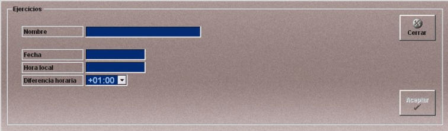
En esta ventana se definen los siguientes datos:
Nombre: Nombre del ejercicio.
Formato: caracteres alfanuméricos
Fecha: Fecha de Inicio del Ejercicio.
Unidades: DD-MM-AAAA
Rango: 00-31 (DD) 00-12 (MM) 1971-2037 (AAAA)
Hora Local: Hora de Inicio del Ejercicio. Debe indicarse la hora local.
Unidades: HH:MM:SS
Rango: 00-23 (HH) 00-59 (MM) 00-59 (SS)
Diferencia Horaria: Indica el desfase horario de la hora local respecto a la GMT. El operador puede modificar este desfase para adaptar la hora local a la zona horaria en la que el ejercicio tenga lugar.
Al pulsar Aceptar se crea un nuevo ejercicio que se añade, como los demás modelos básicos, a la lista de ejercicios de la ventana de Preparación de Modelos, pero además también se añade a la ventana de Preparación de Ejercicios, donde el operador puede añadir consolas, escenario y unidades para completar la configuración del nuevo ejercicio.
Como se puede ver en la siguiente figura, los elementos que se van añadiendo al ejercicio aparecen en la ventana de Preparación de Ejercicios formando una estructura en árbol que permite mostrar y ocultar los elementos que se agrupan en cada una de las ramas, pulsando el botón "+" (para mostrar) o "–" (para ocultar) que aparece a la izquierda de cada una de ellas.
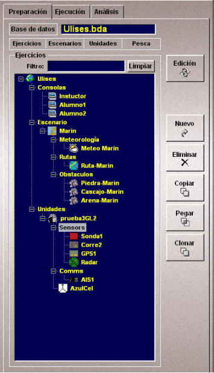
En esta ventana, además de la lista de ejercicios, se puede presentar la lista, Escenarios, Unidades y Artes de Pesca que se han creado, pulsando respectivamente los botones Ejercicios, Escenarios, Unidades y Pesca en la barra de botones situada encima de la lista.
El operador puede introducir caracteres en el campo Filtro, para que en la lista sólo se muestren los elementos que contengan estos caracteres. Pulsando el botón Limpiar se vuelven a mostrar todos los elementos de la lista.
Para configurar el ejercicio con todos los elementos necesarios, hay que pulsar el botón Ejercicios y seguir el procedimiento que se describe a continuación:
- Asignación de consolas al ejercicio. En la ventana de Preparación de Ejercicios, se selecciona el ejercicio que se va a preparar y en la ventana de Preparación de Modelos se presenta la lista de consolas. Se selecciona una consola en la lista y se pulsa el botón Añadir. Una vez añadida la primera consola, en la estructura del ejercicio en preparación aparece el apartado Consolas y bajo él se muestra la consola incorporada. Este proceso debe repetirse para añadir todas las consolas que intervengan en el ejercicio.
- Configuración de las consolas (instructor o alumno). En la ventana de Preparación de Ejercicios, se selecciona la consola, se pulsa el botón Edición y en la ventana que aparece se puede configurar la consola como instructor, marcando la casilla Instructor habilitado o como alumno, no quitando la marca de dicho campo.
- Asignación de escenario al ejercicio. En la ventana de Preparación de Ejercicios, se selecciona el ejercicio que se va a preparar y en la ventana de Preparación de Modelos se presenta la lista de escenarios. Se selecciona un escenario y se pulsa el botón Añadir. Una vez añadido el escenario, en la estructura del ejercicio en preparación aparece el apartado Escenario y bajo él se muestra el escenario incorporado.
- Asignación de elementos del escenario (zonas meteorológicas, mapas de viento, cardumen…). En la ventana de Preparación de Ejercicios, se selecciona el escenario del ejercicio que se va a preparar y en la ventana de Preparación de Modelos se presenta la lista correspondiente al elemento que se desea añadir. Se selecciona dicho elemento y se pulsa el botón Añadir. El elemento seleccionado aparece en la estructura del ejercicio en el apartado Escenario.
- Asignación de un tipo de pez al cardumen. En la ventana de Preparación de Ejercicios, se selecciona el cardumen que previamente se ha añadido al escenario y en la ventana de Preparación de Modelos se presenta la lista de modelos de peces. Se selecciona un modelo de pez y se pulsa el botón Añadir. El modelo de pez añadido aparece en la estructura del ejercicio bajo el cardumen seleccionado.
- Definición del estado del cardumen. En la ventana de Preparación de Ejercicios, se selecciona el cardumen, se pulsa el botón Edición y en la ventana que aparece se puede definir el estado del cardumen seleccionado. Si la casilla Activo está marcada, el cardumen está activo durante la ejecución del ejercicio y si no está marcada el cardumen permanece inactivo. El icono del cardumen se muestra de forma intermitente cuando está inactivo.
- Asignación de unidades al ejercicio. En la ventana de Preparación de Ejercicios, se selecciona el ejercicio que se va a preparar y en la ventana de Preparación de Modelos se presenta la lista de unidades. Se selecciona una unidad y se pulsa el botón Añadir. Una vez añadida la primera unidad, en la estructura del ejercicio en preparación aparece el apartado Unidades y bajo él se muestra la unidad incorporada.
- Asignación de unidades a consolas. En la ventana de Preparación de Ejercicios, se selecciona la consola que se va a preparar y en la ventana de Preparación de Modelos se presenta la lista de unidades. Se selecciona una unidad y se pulsa el botón Añadir. La unidad añadida aparece en la estructura del ejercicio debajo de la consola correspondiente. También es posible añadir las unidades arrastrándolas desde la lista de unidades del ejercicio.
- Definición de las condiciones iniciales de las unidades. En la ventana de Preparación de Ejercicios, se selecciona la unidad, se pulsa el botón Edición y en la ventana que aparece se puede introducir la posición, altura, heading, velocidad y ruta(*) para la unidad seleccionada. La posición puede ser introducida manualmente o situando el Hook en la posición deseada y pulsando el botón Hook. También se puede situar la unidad arrastrando su símbolo en la Presentación Cartográfica hasta la posición deseada.
- Asignación de equipos a las unidades. En la ventana de Preparación de Ejercicios, se selecciona una unidad y en la ventana de Preparación de Modelos se presenta la lista de equipos de comunicación (o de sensores u otras). Se selecciona uno de los equipos que debe llevar la unidad y se pulsa el botón Añadir. Una vez añadido el equipo, en la estructura del ejercicio en preparación, en el apartado correspondiente a la unidad aparece el apartado Comunicaciones (o Sensores o Misceláneos) y bajo él se muestra el equipo que se ha incorporado a la unidad. Este proceso debe repetirse para añadir todos los equipos a la unidad. También es posible asignar un equipo a una unidad, arrastrándolo desde otra unidad que lo tenga asignado.
- Configuración de los equipos instalados. Una vez asignado los equipos a las unidades es necesario definir ciertos datos específicos de la instalación de un equipo en la unidad, como por ejemplo altura de antena del equipo. Para ello, en la ventana de Preparación de Ejercicios, se selecciona el equipo, se pulsa el botón Edición y en la ventana que aparece se pueden introducir sus datos de instalación.
- Asignación de elementos de pesca a las unidades. En la ventana de Preparación de Ejercicios se selecciona la unidad y en la ventana de Preparación de Modelos se presenta la lista correspondiente al tipo de elemento de pesca (maquinillas, botalones, cerco, palangre o arrastre) que se quiera añadir. Se selecciona un elemento de la lista y se pulsa el botón Añadir A cada unidad sólo se le puede añadir una maquinilla, un botalón y un tipo de arte de pesca (cerco, palangre o arrastre) si se añade un nuevo elemento del mismo tipo, se sustituye el anterior. También es posible añadir elementos de pesca arrastrándolos desde otra unidad que lo tenga asignado.
- Banda - Sólo se puede seleccionar para añadir un Palangre o un Cerco.
- Rampero - Sólo se puede seleccionar para añadir un Arrastre.
- Popa - Sólo se puede seleccionar para añadir un Arrastre.
- Babor - Indica que la recogida se hace por babor.
- Estribor - Indica que la recogida se hace por estribor.
- Asignación de aparejos al arte de arrastre. En la ventana de Preparación de Ejercicios (solapa Pesca), se selecciona el arte de arrastre y en la ventana de Preparación de Modelos se presenta la lista del elemento de arrastre que se quiere añadir (red, cable, puerta, flotador o lastre). Se selecciona uno de los elementos de la lista y se pulsa el botón Añadir. Una vez añadido el elemento, bajo el arte de arrastre seleccionado aparece el apartado Aparejos y bajo él se muestra el elemento que se ha incorporado al arte de arrastre. Este proceso debe repetirse para añadir todos los aparejos del arrastre. Sólo son necesarios la red y el cable, los otros elementos pueden añadirse o no.
- Eliminar elementos de un ejercicio. En la ventana de Preparación de Ejercicios, seleccionar el elemento que se desea eliminar del ejercicio en preparación y pulsar el botón Eliminar. El elemento seleccionado desaparece del ejercicio pero sigue estando disponible para su asignación a otros ejercicios.
- Copiar y pegar elementos. Otra forma de añadir plataformas y equipos a las unidades es copiándolos de una unidad que ya los tenga. Para realizar esta copia, se selecciona el elemento a copiar y se pulsa el botón Copiar. A continuación se selecciona la unidad a la que se quiere asignar dicho elemento y se pulsa el botón Pegar. Seleccionando para copia el apartado Comunicaciones (o Sensores o Misceláneos) es posible copiar en un solo paso todos los equipos de comunicación (o sensores o misceláneos) de una unidad.
- Copiar un ejercicio con otro nombre. El botón Clonar realiza una copia del ejercicio seleccionado en la lista. Al pulsar el botón se presenta una ventana el la que el operador debe introducir el nombre de la copia y pulsar Aceptar.
Sólo se puede incluir un escenario en cada ejercicio, de manera que si se añade otro escenario al ejercicio, éste último sustituye al anterior.
Este proceso debe repetirse para añadir todos los tipos de elementos del escenario que requiera el ejercicio.
Los cardúmenes y peces requieren un tratamiento especial, primero hay que añadir el cardumen al escenario, y a continuación añadir un modelo de pez al cardumen.
Nota: Es necesario añadir un tipo de pez al cardumen. Los cardúmenes sin peces no son evaluados por el sistema.
Sólo se puede incluir un tipo de pez en cada cardumen, de manera que si se añade otro tipo de pez al cardumen, éste último sustituye al anterior.
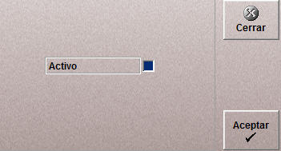
También es posible añadir unidades a un ejercicio haciendo clic con el ratón sobre una unidad de otro ejercicio y arrastrándola hasta el ejercicio al que se quiera añadir.
Nota: Para añadir unidades móviles al ejercicio, es necesario que dicha unidades tengan una plataforma asociada. La asignación de plataforma a las unidades se describe más adelante (ver "Preparación de unidades" al final de este apartado).
La asignación de unidades a Consola no es necesaria, pero si se hace, cuando se inicie el ejercicio, la consola que tenga asignada unidades sólo podrá controlar las unidades asignadas.
Si se marca la casilla Ambientación la unidad se pueda filtrar durante la ejecución del ejercicio con la finalidad de que la presentación de las unidades en el área de datos de la ventana de ejecución sea más clara. Generalmente llevarán esta marca aquellas unidades que no sean de mucho interés para el ejercicio.

(*)Sólo se puede asignar ruta a las unidades que tengan plataformas de tipo Buque Simple para el resto de las unidades el campo ruta estará desactivado.
Al desplegar el campo Ruta aparecen todas las rutas disponibles en el ejercicio y se puede seleccionar cualquiera de ellas para asignarla a la unidad. A continuación se indicará un punto de la ruta y la fecha y hora a la que la unidad iniciará la ruta dirigiéndose al punto indicado.
Para salvar los datos introducidos se pulsa Aceptar y para descartarlos Cerrar.
Solo puede asignarse a la unidad un equipo de cada tipo. Las unidades fijas no deben llevar baterías.
Para salvar los datos introducidos se pulsa Aceptar y para descartarlos Cerrar.
A continuación se describen las ventanas de configuración de equipos.
Configuración del Radar
La ventana de configuración del radar tiene tres solapas distintas y en cada una de ella se configuran diferentes parámetros del equipo:
Solapa General:
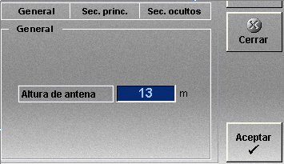
Altura de Antena: Altura a la que se instala la antena del equipo. Se utiliza para determinar el alcance del equipo.
Unidades: metros
Rango: 0 - 100.00
Solapa Sector Principal
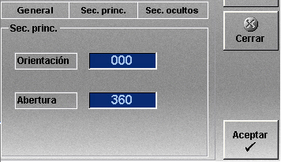
En esta ventana se define el sector de detección del radar con los siguientes datos:
Orientación: Orientación del centro del sector principal del radar.
Unidades: grados
Rango: 0 - 359
Abertura: Amplitud del sector.
Unidades: grados
Rango: 0 - 360
Solapa Sectores Ocultos
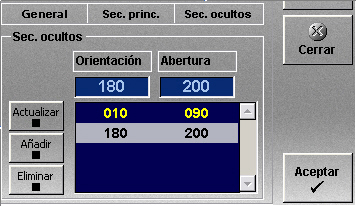
En los sectores que se definen en esta ventana el radar no detecta.
Los sectores definidos son los que aparecen en la lista en color amarillo.
Para incluir un sector en la lista se pulsar el botón Añadir, se introducen los datos del sector en los campos Orientación y Abertura y a continuación se pulsa el botón Actualizar.
Para modificar un sector, se selecciona el sector en la lista se introducen los datos del sector en los campos Orientación y Abertura y a continuación se pulsa el botón Actualizar.
Para eliminar un sector, se selecciona el sector en la lista y a continuación se pulsa el botón Eliminar.
Configuración de la Sonda, el Sonar y la Corredera

En esta ventana se establece la posición del equipo tomando como origen de referencia el centro del buque tal como se muestra en la siguiente figura:

Configuración del GPS
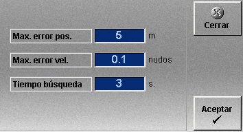
Max. error pos.: Error máximo del equipo en para la posición.
Unidades: metros
Rango: 0 - 100.0
Max. error vel.: Error máximo del equipo en para la velocidad.
Unidades: nudos
Rango: 0 - 100.0
Tiempo búsqueda: Tiempo de búsqueda del satélite.
Unidades: segundos
Rango: 1- 60
Configuración del Radiogoniómetro y el AIS
Altura de Antena: Altura a la que se instala la antena del equipo. Se utiliza para determinar el alcance del equipo.
Unidades: metros
Rango: 0 - 100.00
Configuración de la Radio VHF

Altura de Antena: Altura a la que se instala la antena del equipo. Se utiliza para determinar el alcance de la comunicación VHF.
Unidades: metros
Rango: 0 – 200.0
Invertir frecuencias: Cuando se marca esta casilla el equipo se configura con las frecuencias invertidas, lo que le permite comunicar con las radios de todos los buques. Sólo debe marcarse para las unidades que controla el instructor.
Aunque este es el procedimiento general, los elementos de pesca deben añadirse siguiendo un orden ya que dependen unos de otros.
En primer lugar hay que añadir la maquinilla que es necesaria para cualquier arte de pesca (arrastre, palangre o cerco).
A continuación hay que configurar la maquinilla desde la ventana de configuración. Esta ventana se abre seleccionando la maquinilla que se ha añadido al ejercicio y pulsando el botón Edición.
Configuración de la Maquinilla
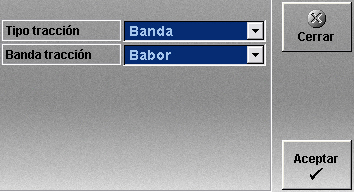
La configuración de la maquinilla depende del tipo de arte de pesca que se vaya a incluir en el buque.
Tipo de tracción: Indica la dirección desde la que el buque tira del arte de pesca.
Puede tomar tres valores:
Banda de tracción: Indica si la recogida de la red se hace por babor o por estribor.
Solo se puede seleccionar si el tipo de tracción es Banda.
Puede tomar dos valores:
El botalón sólo debe añadirse si se quiere incluir un Arrastre de tipo Tangón, para cualquier otro arte de pesca el botalón no es válido.
Si se añade botalón también hay que configurarlo abriendo la ventana de configuración con el botón Edición.
Configuración de Botalón
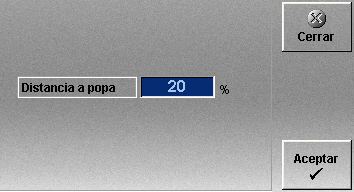
Distancia a popa: Distancia desde el botalón hasta la popa expresada en porcentaje de la eslora del buque.
Finalmente se añade el arte de pesca, Palangre, Cerco o Arrastre.
El Palangre y el Cerco se pueden añadir directamente ya que no requieren preparación previa, pero para añadir el Arrastre es necesario prepararlo con sus aparejos correspondientes.
Si se añaden puertas o flotadores también hay que configurarlos abriendo la ventana de configuración con el botón Edición.
Configuración de Puertas
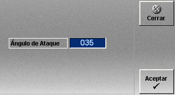
Ángulo de Ataque: Inclinación de la puerta.
Unidades: grados
Rango: 0 - 60
Configuración de Flotadores
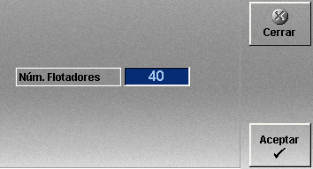
Num. Flotadores: Número de flotadores de la red de arrastre.
Unidades: número
Rango: 0 a 200
El sistema comprueba si el elemento que se va a borrar afecta a otros elementos o ejercicios y si es así muestra un mensaje indicando los elementos afectados y pidiendo confirmación para eliminar el elemento seleccionado. Si el operador acepta se eliminan todos los elementos afectados.
Estos botones también permiten copiar unidades de un ejercicio a otro.

De la misma manera que se preparan ejercicios, se pueden preparar de forma independiente, escenarios, unidades y artes de pesca como se describe a continuación.
Preparación de Escenarios
Seleccionando el botón Escenarios de la barra de botones situada encima de la lista, se muestra la lista de escenarios disponibles. En esta lista se pueden añadir elementos a los escenarios de la misma manera que se añaden en la lista de ejercicios.
Preparación de Unidades
Seleccionando el botón Unidades de la barra de botones situada encima de la lista, se muestra la lista de unidades disponibles. En esta lista se pueden añadir elementos a las unidades de la misma manera que se añaden en la lista de ejercicios.
La asignación de plataforma a las unidades móviles sólo se puede realizar desde esta lista, ya que no se pueden añadir unidades móviles a los ejercicios si no tienen plataforma asignada.
Para asignar la plataforma a la unidad, se selecciona la unidad en la ventana de Preparación de Ejercicios y en la ventana de Preparación de Modelos se presenta la lista correspondiente al tipo de plataforma que se quiera añadir. Se selecciona una plataforma de la lista y se pulsa el botón Añadir.
También es posible añadir la plataforma arrastrándola desde otra unidad que la tenga asignada.
Sólo se puede asignar una plataforma a cada unidad, de manera que si se añade otra plataforma, ésta última sustituye a la anterior.
Preparación de Artes de Pesca
Seleccionando el botón Pesca de la barra de botones situada encima de la lista, se muestra la lista de artes de pesca disponibles. En esta lista se pueden añadir aparejos a las artes de arrastre.
La asignación de aparejos a las artes de arrastre sólo se puede hacer desde esta lista, no es posible hacerla desde la lista de ejercicios.
Importante - Los ejercicios preparados se guardan en una copia temporal de la base de datos y se pierden al cerrar la aplicación; para guardarlos de forma permanente, hay que salvar el archivo de base de datos mediante la opción Archivo → Ejercicio → Preparación → Salvar del menú principal (ver apartado Menú Principal).